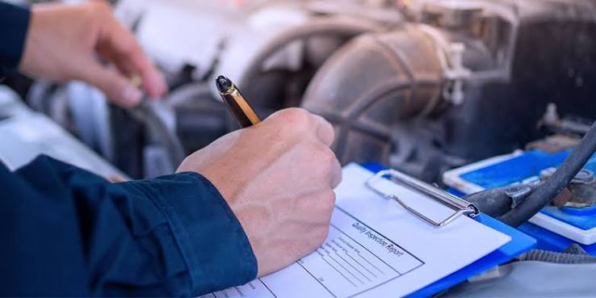
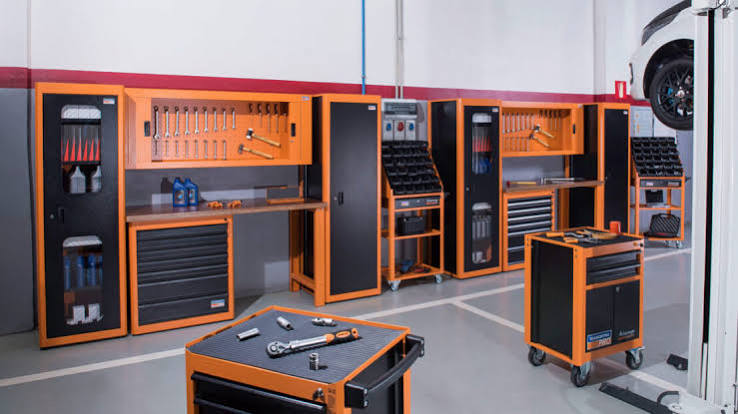

Conheça a melhor oficina mecânica da cidade Osvaldo Motors
Osvaldo Motors: Onde seu carro recebe cuidado, segurança e qualidade em cada serviço
início
serviços
menu
contato
Osvaldo Motors: Onde seu carro recebe cuidado, segurança e qualidade em cada serviço
Equipe especializada para cuidar do seu veículo com segurança.

Garantia nos serviços para mais confiança e tranquilidade

Uma oficina completa e equipada para realizar manutenções, reparos e revisões em seu veículo
Trabalhamos com qualidade e atenção em cada detalhe para garantir um serviço eficiente e seguro

Utilizamos peças e ferramentas de qualidade para garantir um serviço eficiente e seguro
Venha conhecer nossa oficina e descubra um atendimento de confiança para cuidar do seu carro
Funcionalidades do Sistema
| serviço | valor | tempo |
|---|---|---|
| Troca de óleo | 80 | 1h |
| Alinhamento | 100 | 1h |
| Balanceamento | 120 | 1h |
| Revisão de freios | 250 | 2h |
| Diagnóstico do motor | 150 | 2h |